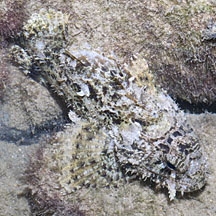
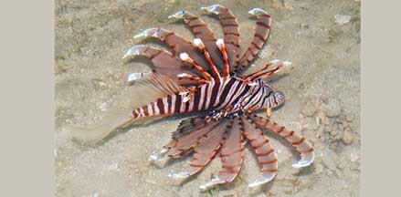
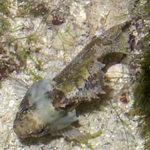
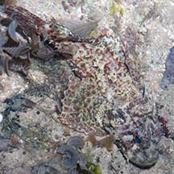
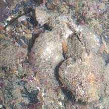
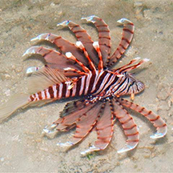
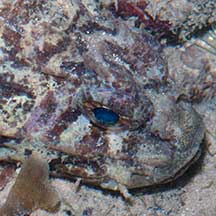
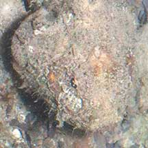

|
|
| fishes text index | photo index |
| Phylum Chordata > Subphylum Vertebrata > fishes |
| Scorpionfishes Family Scorpaenidae updated Oct 2020
Where seen? These prickly well-camouflaged fishes are seen on many of our shores, in seagrass and coral rubble areas. Masters of disguise, some can also be very small. Most stay motionless and thus do not betray their presence through movement. Patience and a keen eye is required to spot one. What are scorpionfishes? Scorpionfishes belong to the Family Scorpaenidae. Among members of this family are the most venomous fishes known. According to FishBase: the family has 23 genera and 172 species, most are bottom-dwellers. They are found on tropical and temperate seas. Some of the fishes that used to be in Family Scorpaenidae are now placed under several different families including Family Apistidae (wasp scorpionfishes), Family Tetrarogidae (waspfishes) and Family Synanceiidae (stonefishes). Features: Some are tiny and hide among seaweeds. Others may be larger. Scorpionfishes have large heads. There is a bony ridge on the cheek. The scorpionfish's mottled pattern matches its surroundings perfectly. Sometimes, the same species living in different locations can have different colours and patterns. It can also darken and lighten its colours. Scorpionfishes are generally bottom dwellers. Some species lack a swim bladder. Sting like a fish: The common name of these fishes comes from the stinging pain that they can inflict. When stepped upon or mishandled, the stout spines on the dorsal fins act like hypodermic needles, injecting venom into the offending foot or hand. The venom is excruciating to humans. Some species are commonly called waspfishes for their nasty stings. Some also have venomous anal and pelvic fins. Scorpionfishes should thus NOT be handled. Even dead ones. A scorpionfish uses its venom only for protection and not to catch or kill prey. The scorpionfish is not aggressive and prefers to hide or swim away, using its venom only as a last resort. The best way to avoid being stung is simply not to disturb or touch one. |
 Perfectly camouflaged! Tanah Merah, Jul 11 |
 The Lionfish doesn't bother to hide! Pulau Hantu, Aug 15 Photo shared by Loh Kok Sheng on his blog. |
| Scorpionfish mimic: The False scorpionfish (Centrogenys vaigiensis) looks and behaves like a scorpionfish but belong to the Family Serranidae which includes groupers. By mimicking the more venomous scorpionfishes, the false scorpionfish probably manages to discourage most predators. Here's more on how to tell apart fishes that look like stones. |
 The Stonefish is from a different family. |
 The False scorpionfish is from a dffierent family. |
 The Long-spined waspfish is now in a different family |
| What do they eat? Most scorpionfishes
skulk on or near the bottom, staying motionless for hours to ambush
passing prey. They will eat any prey that can fit into the large mouth
including fishes and crustaceans. Some species may specialise in a
particular kind of prey. Scorpionfish babies: Most scorpionfishes reproduce through internal fertilisation. Some species lay their eggs in a gelatinous balloon. The larvae are planktonic. Human uses: Scorpionfishes are venomous but not poisonous. In temperate climates, large members of this group called rockfishes or rockcods (Sebastes sp.) are considered good eating and are caught by sport fishermen as well as commercially for as food fish. Rockfishes are vulnerable to overfishing as they grow slowly and reach maturity late. Tropical scorpionfishes of various kinds are extensively harvested from the wild for the live aquarium trade. The Lionfish (Pterois volitans) is particularly popular. Harvesting tropical scorpionfishes for the live aquarium trade may involve the use of cyanide or blasting, which damage the habitat and kill many other creatures. Like other fish and creatures harvested for the live aquarium trade, most die before they can reach the retailers. Without professional care, most die soon after they are sold. Those that do survive are unlikely to breed successfully. |
| Some Scorpionfishes on Singapore shores |
 Painted scorpionfish |
 False stonefish |
 Lionfish |
 |
 |
|
| Large bulbous eyes protruding out of the head. | Tiny eyes not protruding. Small depression under the eye. |
| Family
Scorpaenidae recorded for Singapore from Wee Y.C. and Peter K. L. Ng. 1994. A First Look at Biodiversity in Singapore. in red are those listed among the threatened animals of Singapore from Ng, P. K. L. & Y. C. Wee, 1994. The Singapore Red Data Book: Threatened Plants and Animals of Singapore. **from WORMS +From our observation
|
Links
|